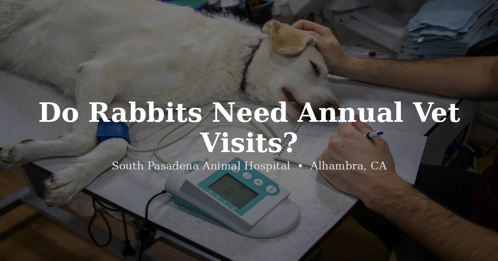
Small AnimalDo Rabbits Need Annual Vet Visits?
Rabbits hide illness until it's serious. Here's why regular wellness exams matter — and what your vet checks at each visit.
Read more →
What Vaccines Does My Dog Need in California?
Core vs. lifestyle vaccines, California's rabies law, and how to build the right schedule for your dog — explained simply.
Read more →
 General
GeneralHow Much Does a Vet Visit Cost in Alhambra?
Vet pricing in the SGV varies widely. Here's what to expect — and why SPAH publishes its fees online before you book.
Read more →
 Local Guide
Local GuideFinding an Exotic Vet in the San Gabriel Valley
Most SGV vets don't see exotic animals. Here's what to look for — and how to find us in Alhambra.
Read more →
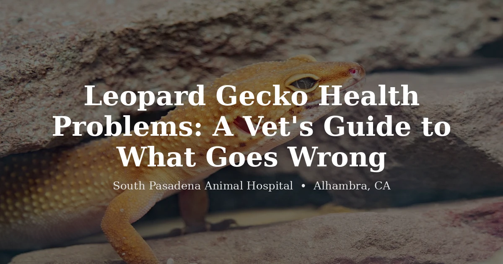
Reptile CareLeopard Gecko Health Problems: A Vet's Guide to What Goes Wrong
MBD, impaction, retained shed, mouth rot, crypto — the most common leopard gecko health problems explained, and when to call a vet.
Read more →
Bird Vet Near Glendale, CA — Avian Care at South Pasadena Animal Hospital
Looking for a bird vet near Glendale? South Pasadena Animal Hospital in Alhambra is about 20 minutes away — cockatiels, parrots, conures, finches, and more.
Read more →
Rabbit Vet Near Whittier, CA — Finding Exotic Care at South Pasadena Animal Hospital
Looking for a rabbit vet near Whittier? South Pasadena Animal Hospital in Alhambra is about 15–20 minutes away — rabbit wellness, dental, GI stasis, and more.
Read more →
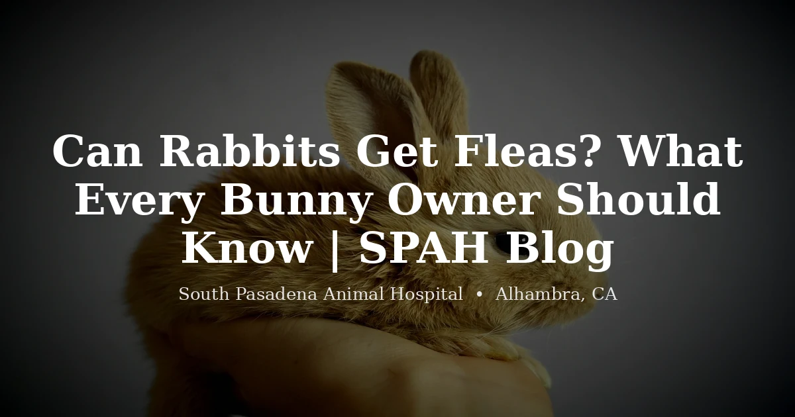
Rabbit CareCan Rabbits Get Fleas? What Every Bunny Owner Should Know
Yes — rabbits can get fleas. And some common dog and cat flea treatments are fatal to bunnies. Here's what's safe, what isn't, and when to call a vet.
Read more →
Exotic Pet Emergency in Los Angeles — What to Do and Where to Go
Rabbit not moving? Bird breathing hard? Reptile unresponsive? Here's what counts as an exotic pet emergency, what to do first, and where to go in the LA area.
Read more →
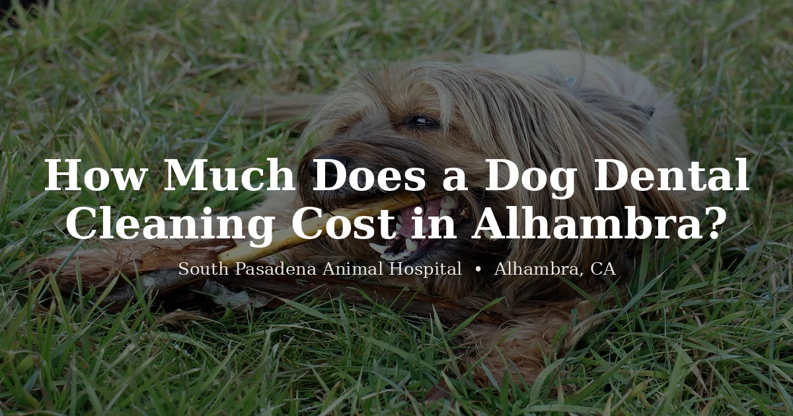
Dog HealthHow Much Does a Dog Dental Cleaning Cost in Alhambra?
Routine cleaning, extractions, anesthesia, radiographs — what goes into the price, why anesthesia-free cleanings fall short, and what to expect at your appointment.
Read more →
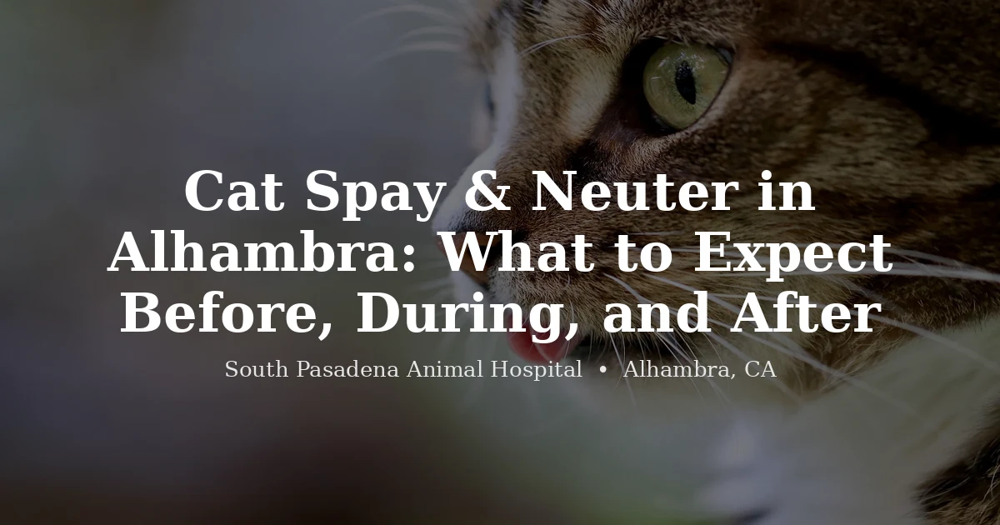
Cat HealthCat Spay & Neuter in Alhambra: What to Expect Before, During, and After
Best age, procedure overview, pre-op prep, recovery timeline, and the warning signs that mean a follow-up call — everything cat owners need to know.
Read more →
Pet Insurance for Exotic Pets: Is It Worth It? A Practical Guide
Most standard plans don't cover exotics. Here's what to look for, what it actually costs to treat an exotic pet emergency, and whether insurance makes financial sense.
Read more →
Heartworm Prevention for Dogs in Los Angeles: What Pet Owners Need to Know
LA's year-round mosquito season means year-round risk. Why prevention costs a fraction of treatment — and what to know about cats and heartworm too.
Read more →
 Dog & Cat Care
Dog & Cat CareFlea & Tick Prevention for Dogs and Cats in the San Gabriel Valley
LA has no hard frost — flea season never ends. The lifecycle facts owners need to actually eliminate an infestation, plus tick species active in the SGV foothills.
Read more →
 Bird Care
Bird CareToxic & Unsafe Foods for Pet Birds: What Parrot and Bird Owners Must Know
Avocado can cause cardiac failure in birds within hours. A complete guide to what parrots, conures, cockatiels, and other birds should never eat.
Read more →
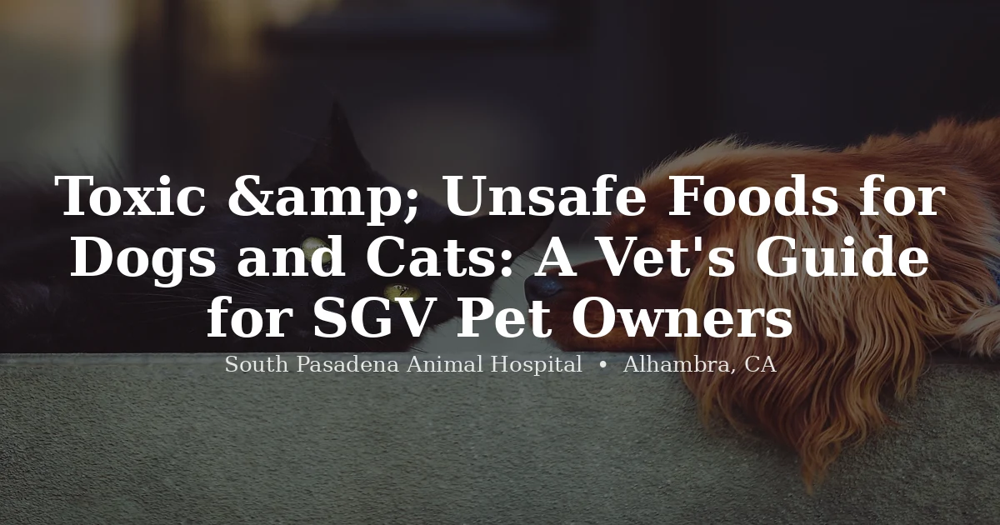
Dog & Cat CareToxic & Unsafe Foods for Dogs and Cats: A Vet's Guide for SGV Pet Owners
Xylitol, grapes, chocolate, onion, macadamia nuts — what each one does and what to do immediately if your pet ate something it shouldn't have.
Read more →
Chameleon Care: Husbandry Basics and Common Health Issues
Chameleons hide illness until they can't. The screen-vs-glass debate, misting requirements, MBD, dehydration, and when something is actually wrong.
Read more →
 Bird Care
Bird CareFinch and Canary Care: Health Problems, Diet, and When to See a Vet
Air sac mites, feather cysts, egg binding, goiter — the health problems small birds develop quietly and the signs that mean it's time to call.
Read more →
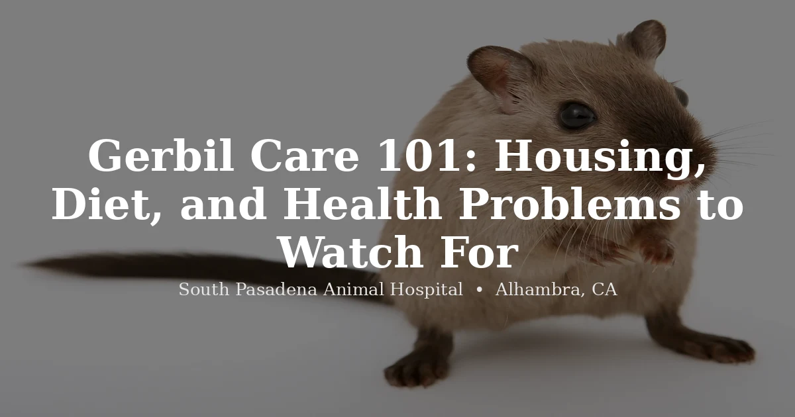
Small Animal CareGerbil Care 101: Housing, Diet, and Health Problems to Watch For
Gerbils need pairs, deep bedding, and a vet who knows small exotics. Covers Tyzzer's disease, seizures, tail degloving, dental issues, and scent gland tumors.
Read more →
Sugar Glider Care: Diet, Housing, and Common Health Problems
Nutritional MBD, obesity from sugary diets, self-mutilation from stress, cloaca infections — how to keep sugar gliders healthy and when to see an exotic vet.
Read more →
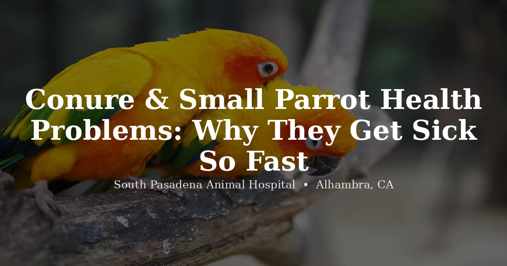
Bird CareConure & Small Parrot Health Problems — Why They Get Sick So Fast
Fatty liver, respiratory infections, feather picking, egg binding — common conure and small parrot health problems and the warning signs owners miss.
Read more →
 Small Animal Care
Small Animal CarePet Rat & Mouse Health Problems — What Owners Need to Watch For
Respiratory infections, mammary tumors, overgrown teeth, mites — common pet rat and mouse health problems and when to call an exotic vet.
Read more →
 Small Animal Care
Small Animal CareGuinea Pig Health Problems — Signs Your Guinea Pig Is Sick and When to Act Fast
URI, scurvy, dental disease, GI stasis, skin mites, ovarian cysts — the most common guinea pig health problems explained, and when to see an exotic vet.
Read more →
Hedgehog Health Problems — Wobbly Hedgehog Syndrome, Hibernation Attempts, and More
WHS, hibernation attempt, obesity, dental disease, mites, cancer — the most common hedgehog health problems and when they need emergency vet care.
Read more →
 Reptile Care
Reptile CareBearded Dragon Health Problems — Signs, Causes and When to See a Vet
MBD, impaction, respiratory infections, yellow fungus — the most common bearded dragon health problems and the husbandry mistakes that cause most of them.
Read more →
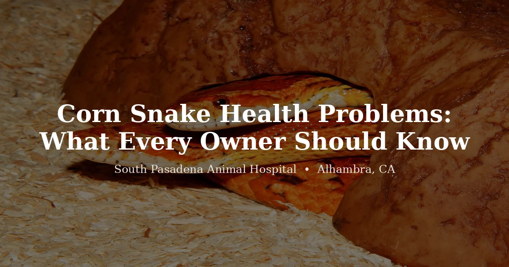
Reptile CareCorn Snake Health Problems — What Every Owner Should Know Before It Gets Serious
Respiratory infections, retained shed, mites, mouth rot — the most common corn snake health problems and the husbandry fixes that prevent most of them.
Read more →
 Small Animal Care
Small Animal CareHamster Health Problems: Signs Your Hamster Needs a Vet — and What Can't Wait
Wet tail can be fatal in 24–48 hours. Learn the most common hamster health problems — and which ones need same-day veterinary care.
Read more →
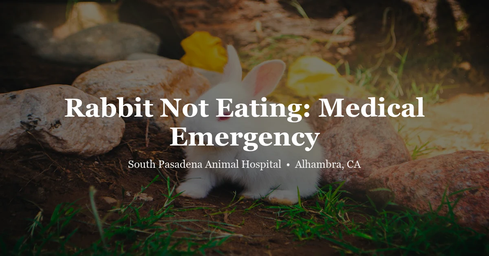
Rabbit CareRabbit Not Eating? Don't Wait. This Is a Medical Emergency.
A rabbit that stops eating needs to be seen within hours, not days. Here's why GI stasis is so dangerous — and exactly what to do right now.
Read more →
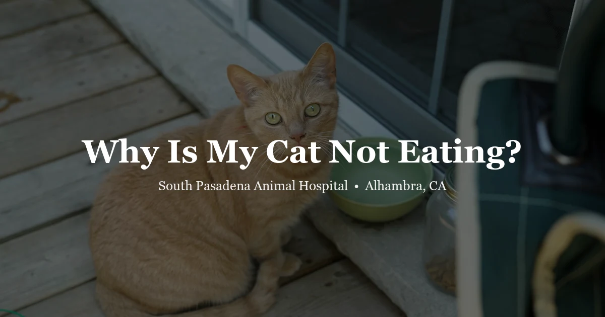
Cat CareWhy Is My Cat Not Eating? Common Causes and When It's a Problem
Cats can develop fatty liver disease in just 2–3 days without food. We walk through the most common causes and exactly when to call the vet.
Read more →
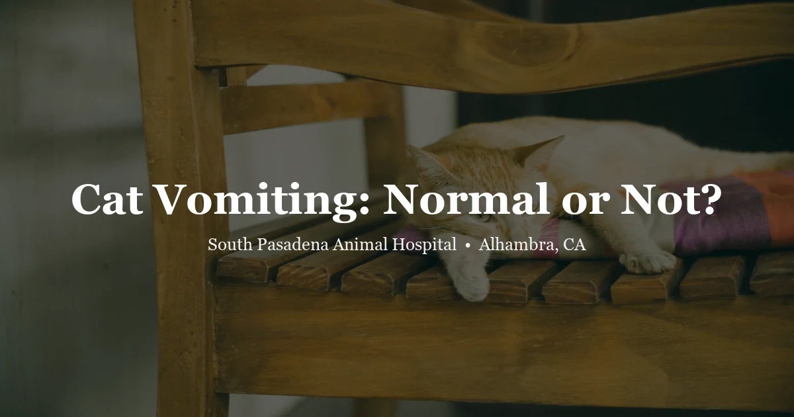
Cat CareCat Vomiting: When It's Normal and When It's Not
Vomiting once a month might be normal — vomiting weekly is not. Here's how to tell the difference and what chronic vomiting usually means.
Read more →
 Dog Care
Dog CareDog Limping: When to Watch and When to Worry
From thorn in the paw to CCL tear — dog limps have very different causes. Here's how to read what you're seeing and when to come in.
Read more →
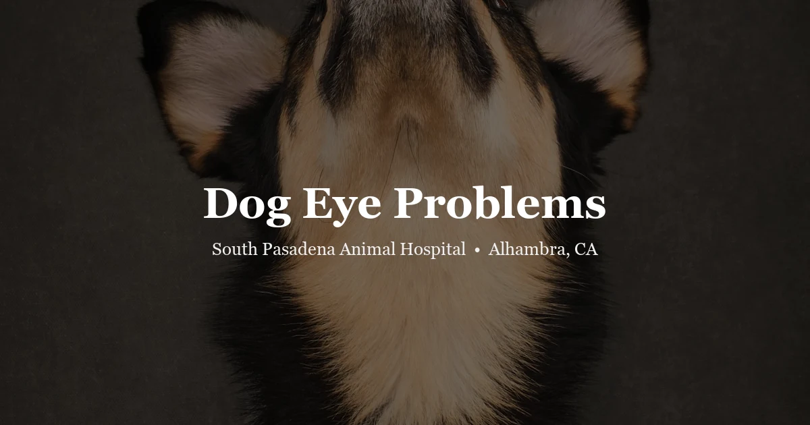
Dog CareDog Eye Problems: What Each Symptom Usually Means
Squinting, discharge, cloudiness, redness — each symptom tells a different story. Some are minor; some need same-day care. Here's how to read them.
Read more →
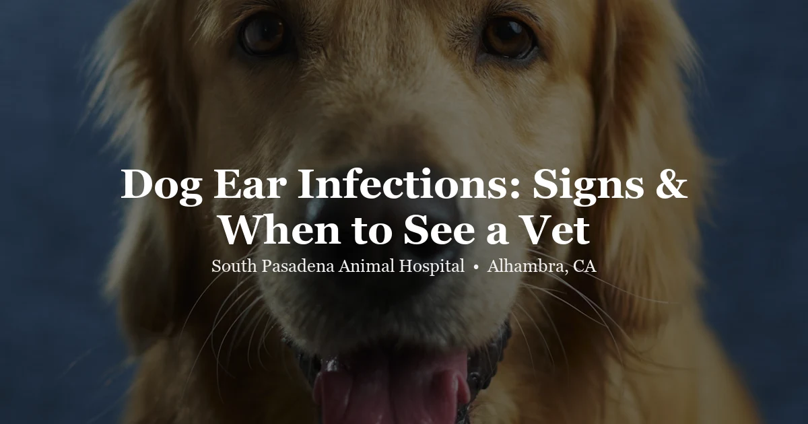
Dog CareDog Ear Infection: Signs, Causes, and When to See a Vet
Head shaking, scratching, or a bad smell from your dog's ear? Learn to identify an ear infection early — and when it needs same-day treatment.
Read more →
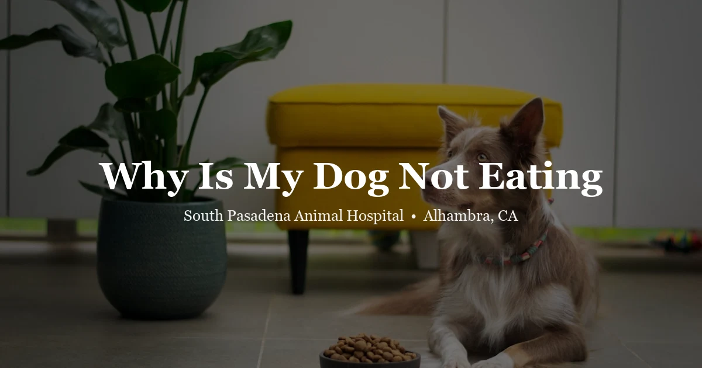
Dog CareWhy Is My Dog Not Eating? When to Worry and When to Wait
Skipped one meal and acting fine? Probably nothing. Hasn't eaten in two days and seems off? That's a vet visit. Here's how to tell the difference.
Read more →
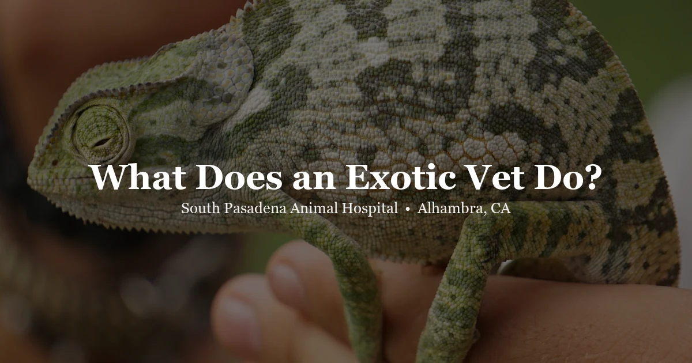
Exotic CareWhat Does an Exotic Vet Do? (And Does Your Pet Need One?)
Most vets only train on dogs and cats. Here's what makes an exotic vet different, which animals need one, and what to expect at the appointment.
Read more →
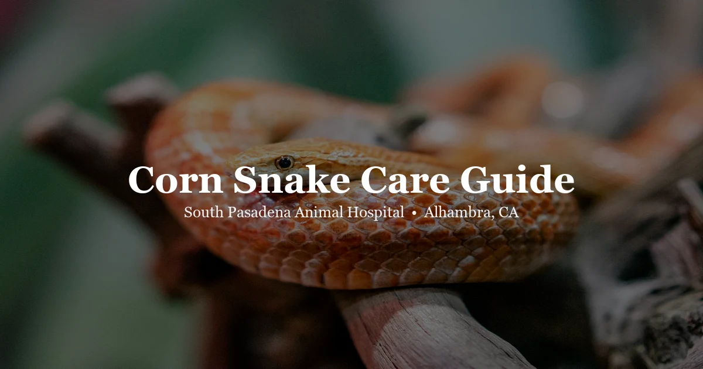
Reptile CareCorn Snake Care: Enclosure, Feeding, Shedding & Health
One of the best beginner snakes — but they live 15–20 years and have real husbandry needs. The complete care guide from our Alhambra reptile vets.
Read more →
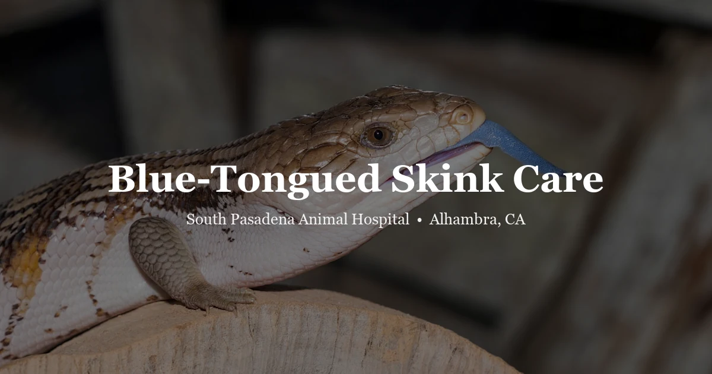
Reptile CareBlue-Tongued Skink Care: Enclosure, Diet, Health & Vet Needs
Docile, omnivorous, and underrated — blue-tongued skinks make excellent large lizard pets. Here's what to get right from day one.
Read more →
 Small Animal
Small AnimalHamster Care: What New Owners Often Get Wrong
The cage is almost always too small. The wheel is almost always missing. Here's what hamsters actually need — and the health problems we see most.
Read more →
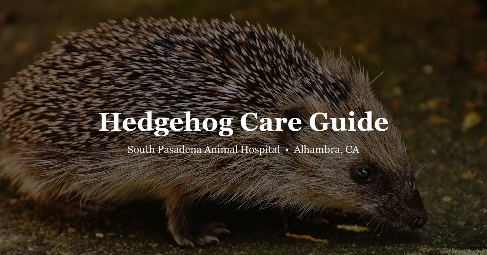
Exotic CareHedgehog Care: What You Need to Know Before Getting One
Temperature control, a proper-sized wheel, and realistic cancer risk expectations — hedgehogs are rewarding but specific. The complete care guide.
Read more →
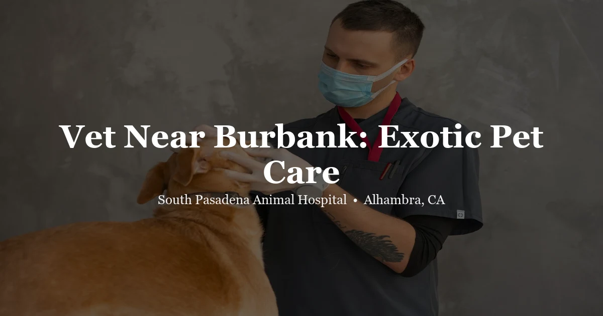
City GuideLooking for a Vet Near Burbank? SPAH Is About 15 Minutes Away
Finding an exotic vet near Burbank isn't easy. SPAH in Alhambra sees rabbits, reptiles, birds, and small mammals — and we're accepting new exotic clients.
Read more →
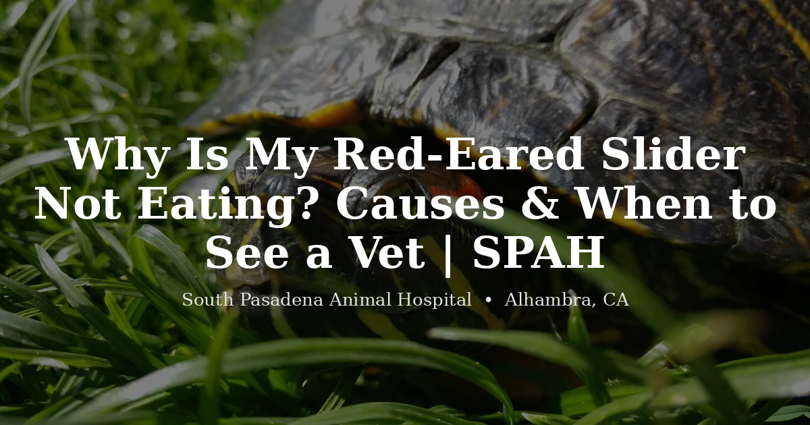
Reptile CareWhy Is My Red-Eared Slider Not Eating?
Temperature problems, stress, illness, and hibernation instinct are the most common reasons a red-eared slider stops eating. Here's how to tell them apart.
Read more →
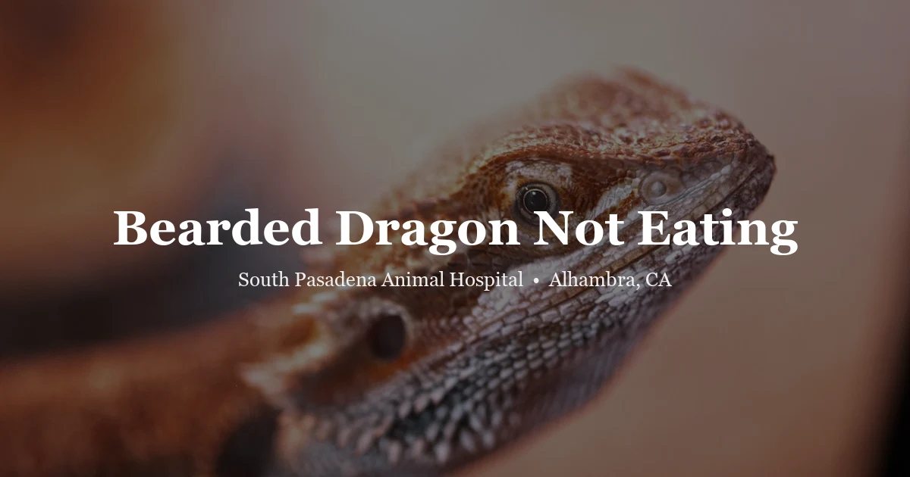
Reptile CareBearded Dragon Not Eating: Causes & What to Do
Brumation, shedding, incorrect temps, and early illness all cause appetite loss in bearded dragons. When to watch and wait — and when to call the vet.
Read more →
Guinea Pig Not Eating: Signs, Causes & When to See a Vet
A guinea pig that stops eating is always urgent — GI stasis, dental malocclusion, and respiratory infections move fast. What to watch for.
Read more →
How Long Do Guinea Pigs Live?
Guinea pigs typically live 4–7 years. Diet, dental health, genetics, and veterinary care all play a role — here's what to expect at every life stage.
Read more →
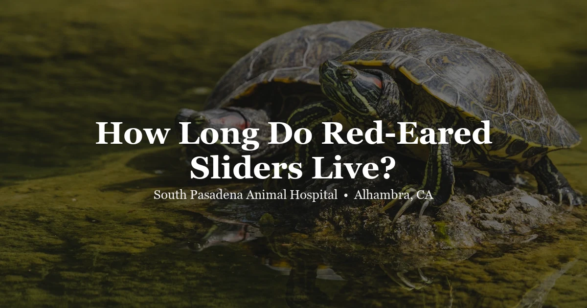
Reptile CareHow Long Do Red-Eared Sliders Live?
With proper care, red-eared sliders often live 20–30 years. Water quality, diet, UV lighting, and vet care are the biggest factors in reaching that potential.
Read more →
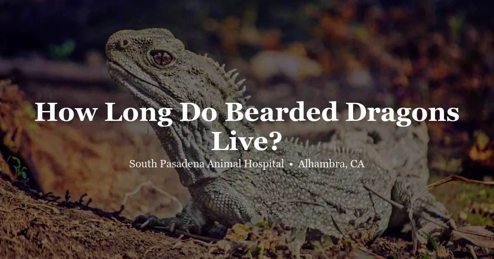
Reptile CareHow Long Do Bearded Dragons Live?
Captive bearded dragons typically live 10–15 years. Lighting, diet, and annual vet checks are the biggest factors — here's what the data shows.
Read more →
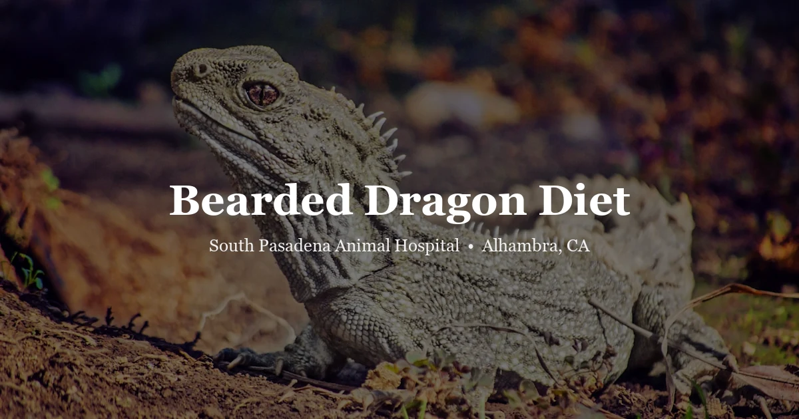
Reptile CareBearded Dragon Diet: What to Feed (and What to Avoid)
Juveniles need 70% insects; adults need 70% leafy greens. A complete guide to dubia roaches, calcium dusting, dangerous foods, and common deficiencies.
Read more →
Leopard Gecko Care Guide: Diet, Lighting & Vet Needs
Leopard geckos are beginner-friendly but have real husbandry requirements — belly heat, live insects, and fat-tail monitoring. The complete owner's guide.
Read more →
 Reptile Care
Reptile CareTortoise Diet: What Do Tortoises Eat?
High-fiber grasses and leafy weeds for Mediterranean species; extra variety for tropical tortoises. A vet-reviewed guide to feeding, supplements, and foods to avoid.
Read more →
 Small Animal
Small AnimalFerret Health & Care: What New Owners Need to Know
Annual ferret vaccines, adrenal disease after age 3, insulinoma, harness training — everything new ferret owners need before their first vet visit.
Read more →
 Small Animal
Small AnimalDo Guinea Pigs Need a Friend? Bonding & Social Needs
Guinea pigs are highly social and do best with a companion. How to introduce two guinea pigs safely, what bonding looks like, and when to call the vet.
Read more →
 Bird Care
Bird CarePet Bird Vet in Alhambra
Pet birds show illness slowly — until they can't. SPAH sees parrots, cockatiels, conures, and finches with in-house diagnostics.
Read more →
 Small Animal
Small AnimalGuinea Pig Vet Care in Alhambra
Dental malocclusion, vitamin C deficiency, respiratory infections — and why certain antibiotics are toxic to guinea pigs.
Read more →
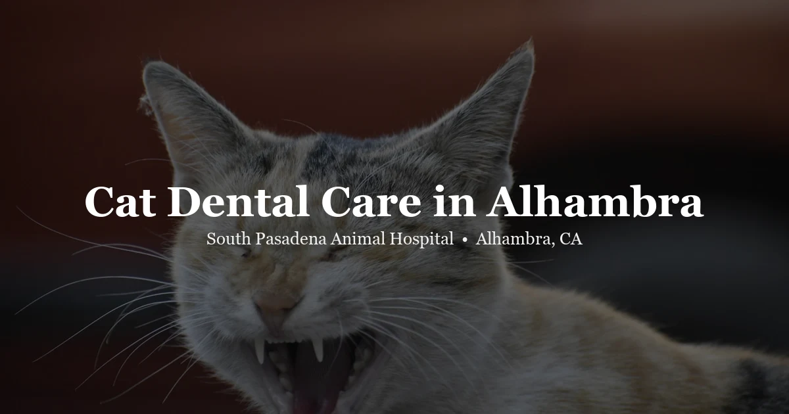
Cat CareCat Dental Disease in Alhambra: Signs, Cleaning, and What Owners Miss
Most cats over 3 have dental disease and most owners can't tell. SPAH covers signs, what a cleaning involves, and tooth resorption.
Read more →
Senior Cat Care in the San Gabriel Valley: What Changes After 10
Cats over 10 need twice-yearly exams and targeted bloodwork. SPAH covers hyperthyroidism, kidney disease, arthritis, and dental disease.
Read more →
Dog Vaccinations in Alhambra: Core Vaccines, Schedules, and What Your Dog Needs
Which vaccines does your dog actually need in California? Core vaccines, puppy schedules, and lifestyle-based recommendations for SGV dogs.
Read more →
Vet Near Arcadia CA: Dogs, Cats, and Exotic Pets in the San Gabriel Valley
South Pasadena Animal Hospital in Alhambra is about 15 minutes from Arcadia via Huntington Drive — dogs, cats, rabbits, birds, reptiles, and more.
Read more →
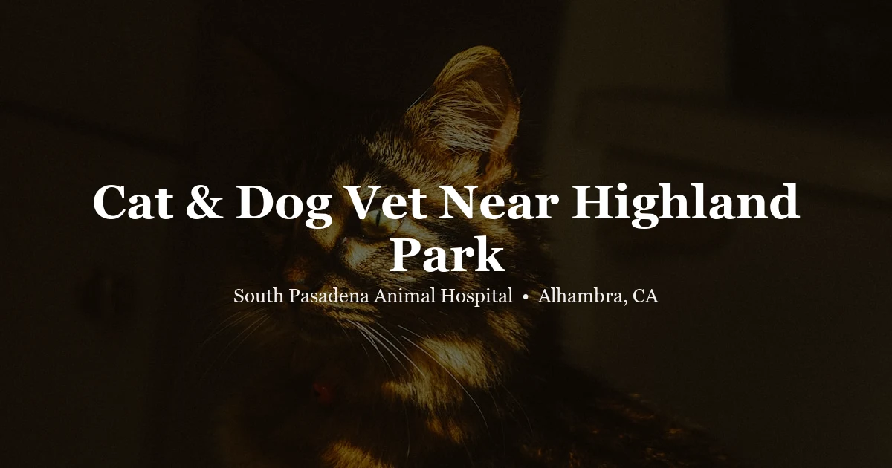
City GuideCat and Dog Vet Near Highland Park Los Angeles
Looking for a vet near Highland Park LA? SPAH in Alhambra is about 20 minutes east — cats, dogs, and exotic pets with transparent pricing.
Read more →
 Exotic Animals
Exotic AnimalsExotic Vet Near Altadena CA: Rabbits, Birds, and Reptiles
Searching for an exotic vet near Altadena? SPAH in Alhambra sees rabbits, birds, reptiles, guinea pigs, and more — about 20 minutes south.
Read more →
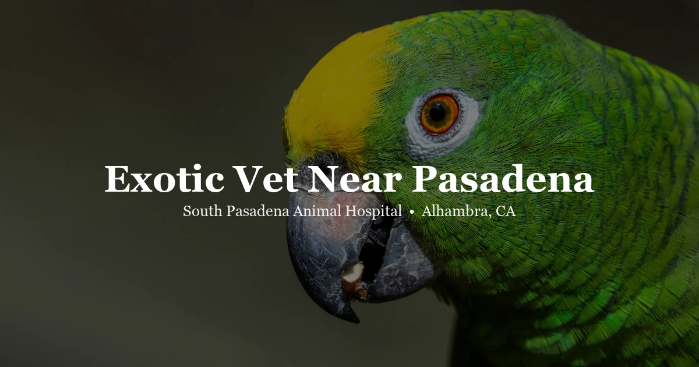
Exotic AnimalsExotic Vet Near Pasadena: Birds, Rabbits, Reptiles, and Small Mammals
Looking for an exotic vet near Pasadena? SPAH is 10 minutes away and sees birds, rabbits, reptiles, guinea pigs, and more with in-house diagnostics.
Read more →
Guinea Pig Vet Near Monterey Park and the San Gabriel Valley
Guinea pig not eating or losing weight? SPAH is 8 minutes from Monterey Park and sees guinea pigs for dental disease, respiratory infections, and wellness.
Read more →
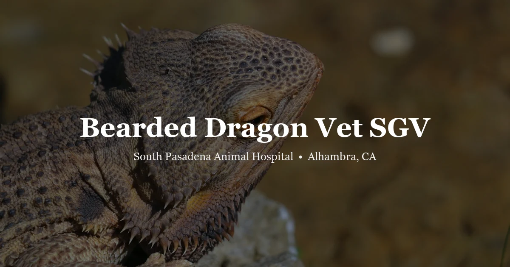
Reptile CareBearded Dragon Vet Near Alhambra: Reptile Care in the San Gabriel Valley
Bearded dragon not eating or acting lethargic? SPAH sees bearded dragons and reptiles with in-house diagnostics and same-day urgent appointments.
Read more →
 Rabbit Care
Rabbit CareRabbit Vet Near San Gabriel: What Bunny Owners in the SGV Need to Know
Finding a rabbit vet near San Gabriel? SPAH is 5 minutes on Valley Blvd and sees rabbits for GI stasis, dental disease, spay/neuter, and wellness.
Read more →
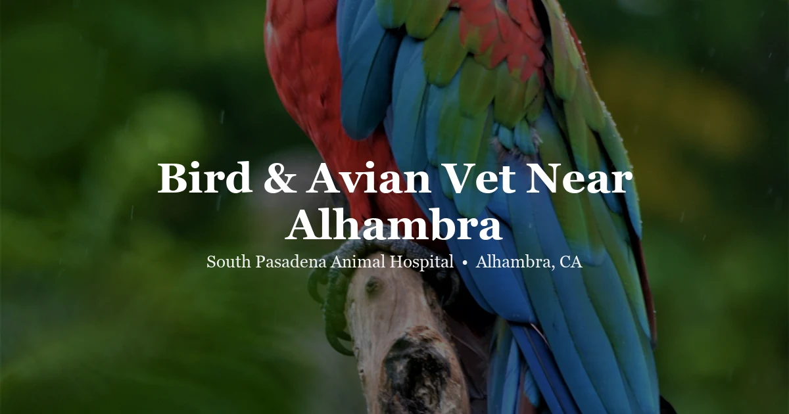
Bird CareBird and Avian Vet Near Alhambra: Parrot, Cockatiel, and Bird Care in the SGV
Looking for a bird vet near Alhambra? SPAH sees parrots, cockatiels, conures, finches, and more — 5 minutes from central Alhambra.
Read more →
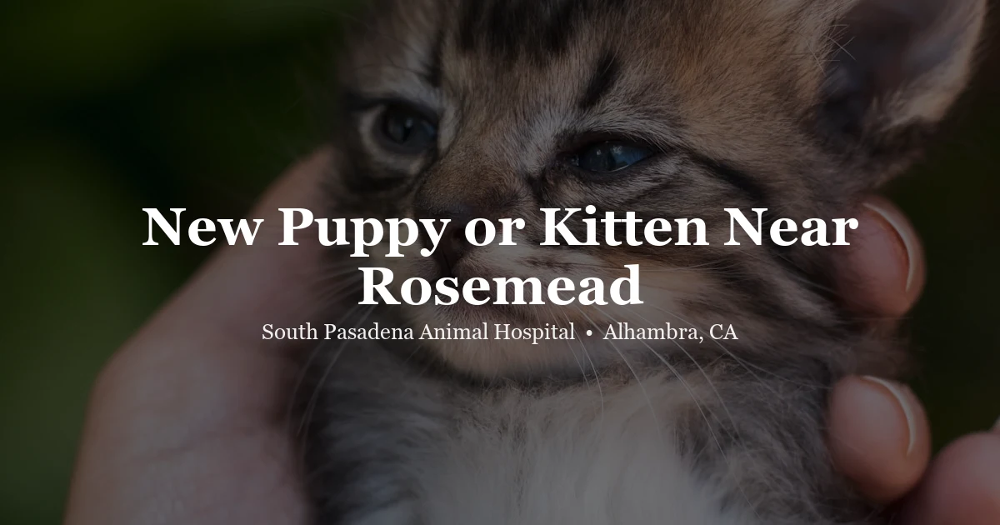
Puppy & KittenNew Puppy or Kitten Near Rosemead? First 30 Days at the Vet Explained
Just got a puppy or kitten near Rosemead? Here's exactly what happens in the first 30 days of vet care — vaccines, deworming, spay/neuter timing.
Read more →
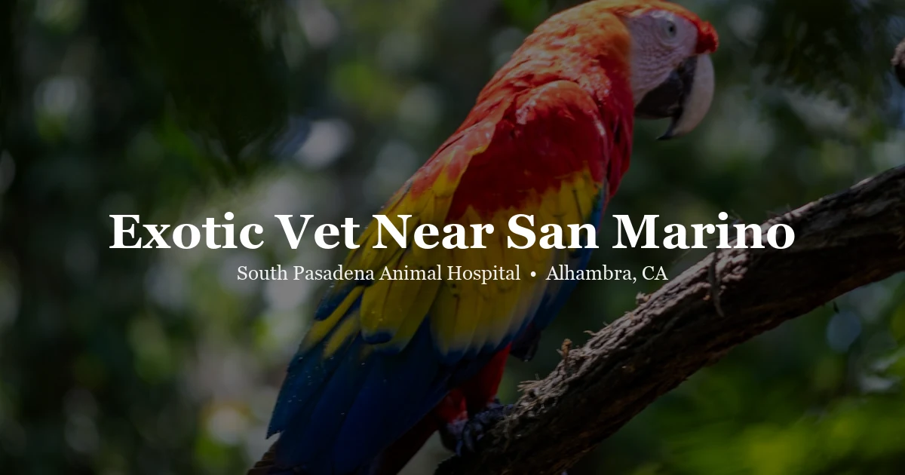
Exotic AnimalsExotic Vet Near San Marino: Where to Take Your Bird, Rabbit, or Reptile
Most vets near San Marino don't see exotic animals. SPAH is 7 minutes away and sees birds, rabbits, reptiles, and small mammals.
Read more →
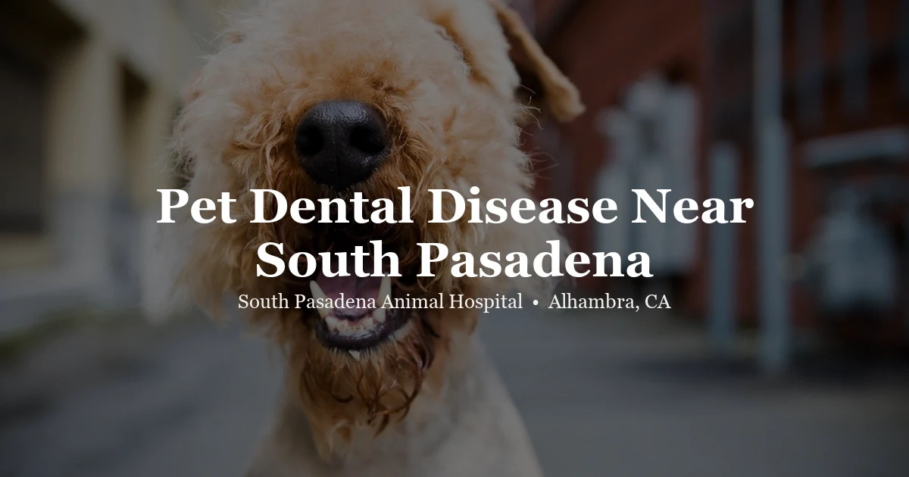
Dog & CatPet Dental Disease Near South Pasadena: What Most Owners Don’t See Coming
Most dogs and cats over 3 have dental disease — and most owners don't know it. An SGV vet explains the signs and when a cleaning becomes urgent.
Read more →
 Dog Care
Dog CareDog Allergies in the San Gabriel Valley: Signs, Triggers, and When to See the Vet
Itchy skin, paw chewing, and ear infections in dogs are often allergy symptoms. How to tell the difference and what to do.
Read more →
 Pet Care
Pet CareSaying Goodbye: A Compassionate Guide to Pet Euthanasia
Quality-of-life scoring, what to expect on the day, aftercare options, and grief support — a gentle, honest guide for pet owners facing this decision.
Read more →
 Dog Care
Dog CareDog Urinary Issues: UTIs, Bladder Stones & Incontinence Explained
From bacterial infections to calcium oxalate stones — the most common urinary problems in dogs, how they're diagnosed, and what treatment looks like.
Read more →
 Dog & Cat
Dog & CatUrinary Problems in Cats & Dogs: Signs, Causes & What Vets Do
Straining to urinate, blood in the urine, accidents indoors — and why a blocked cat is a same-day emergency every time.
Read more →
 Pet Health
Pet HealthMy Pet Has a Cut or Wound: When to Go to the Vet vs. Treat at Home
Minor abrasions vs. deep lacerations vs. bite wounds — how to do first aid at home and the signs that mean your pet needs a vet today.
Read more →
 Pet Health
Pet HealthWhy Is My Pet Coughing or Sneezing? A Vet’s Guide to Respiratory Symptoms
Kennel cough, heart disease, feline asthma, Pasteurella in rabbits — and why open-mouth breathing in a cat is always an emergency.
Read more →
 Dog & Cat
Dog & CatRed Eyes, Cloudy Vision & Ear Infections in Pets: What They Mean
Conjunctivitis, corneal ulcers, glaucoma, chronic ear infections — the eye and ear problems we see most often, and which ones can't wait.
Read more →
 Dog & Cat
Dog & CatPet Itching & Skin Rashes: Allergies, Parasites & What Your Vet Looks For
Environmental allergies, food allergies, flea allergy dermatitis, mange, and ringworm — why Southern California pets have it harder, and what actually helps.
Read more →
 Pet Health
Pet HealthDoes My Pet Have a Fever? How to Tell and What to Do
Normal temperature ranges for dogs, cats, rabbits, guinea pigs, and birds — plus how to take your pet's temperature and when to call the vet.
Read more →
 Pet Health
Pet HealthWhy Is My Pet So Tired? Understanding Lethargy in Dogs, Cats & Exotic Pets
True lethargy — unresponsive, not interested in food, unusually still — is different from a lazy afternoon nap. Here's when it means something serious.
Read more →
 Dog & Cat
Dog & CatMy Pet Is Limping: What It Means and When It’s an Emergency
Paw injuries, arthritis, fractures, and neurological issues — how to assess a limping pet at home and the signs that need same-day attention.
Read more →
 Dog & Cat
Dog & CatWhy Is My Dog or Cat Vomiting? Causes, Warning Signs & When to See a Vet
One vomit vs. repeated episodes, vomiting vs. regurgitation, and the specific signs that mean your pet needs to be seen today — not tomorrow.
Read more →
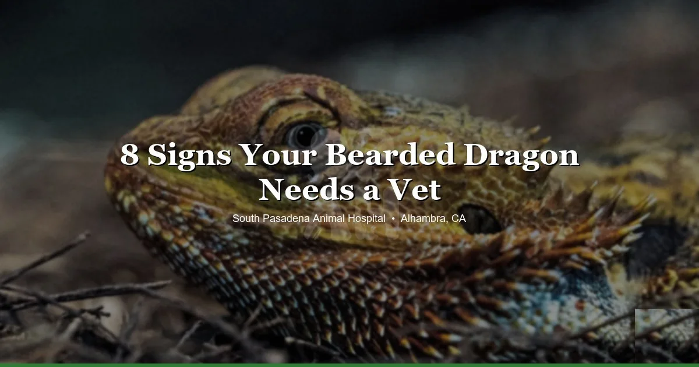
Reptile CareSigns Your Bearded Dragon Needs to See a Vet
Not eating? Lethargic? Black beard? Learn the 8 warning signs that mean your beardie needs veterinary care.
Read more →
 Small Animal
Small AnimalGuinea Pig Sneezing: When to Worry and When It’s Normal
A sneeze from dust is fine. Frequent sneezing with discharge could be a serious upper respiratory infection.
Read more →
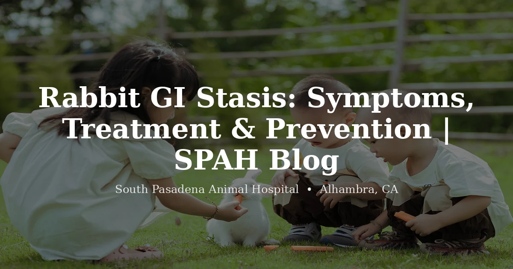
Rabbit CareRabbit GI Stasis: Symptoms, Treatment & Prevention
GI stasis can be fatal within 24–48 hours. Know the signs and how to prevent this common rabbit emergency.
Read more →
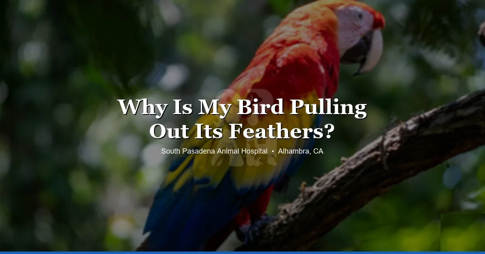
Bird CareWhy Is My Bird Pulling Out Its Feathers?
Feather plucking can be medical or behavioral. A vet exam is the first step to finding the cause and stopping it.
Read more →
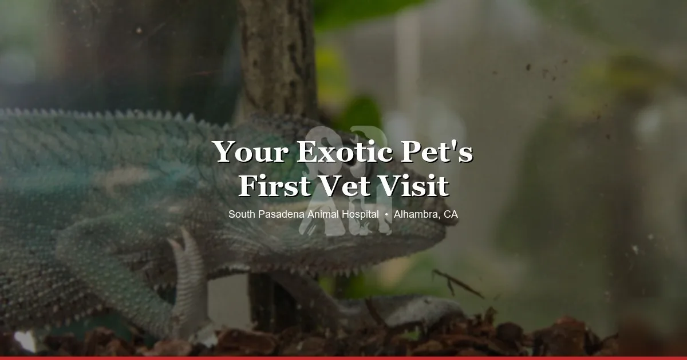
Exotic AnimalsWhat to Expect at Your Exotic Pet’s First Vet Visit
New reptile, bird, or small mammal owner? Here's exactly what happens at the first vet appointment and what to bring.
Read more →
 Small Animal
Small AnimalSigns Your Hamster Is Sick: When to See a Vet
Hamster not eating? Lethargic? Losing fur? The warning signs that mean your hamster needs veterinary care.
Read more →
 Reptile Care
Reptile CarePet Turtle & Tortoise Health Problems Most Owners Miss
Shell rot, swollen eyes, respiratory infections — the common health problems turtle and tortoise owners overlook.
Read more →
 Exotic Animals
Exotic AnimalsKeeping Exotic Pets Safe in Southern California Heat
SoCal heat waves can be deadly for rabbits, guinea pigs, birds, and reptiles. How to keep them safe this summer.
Read more →
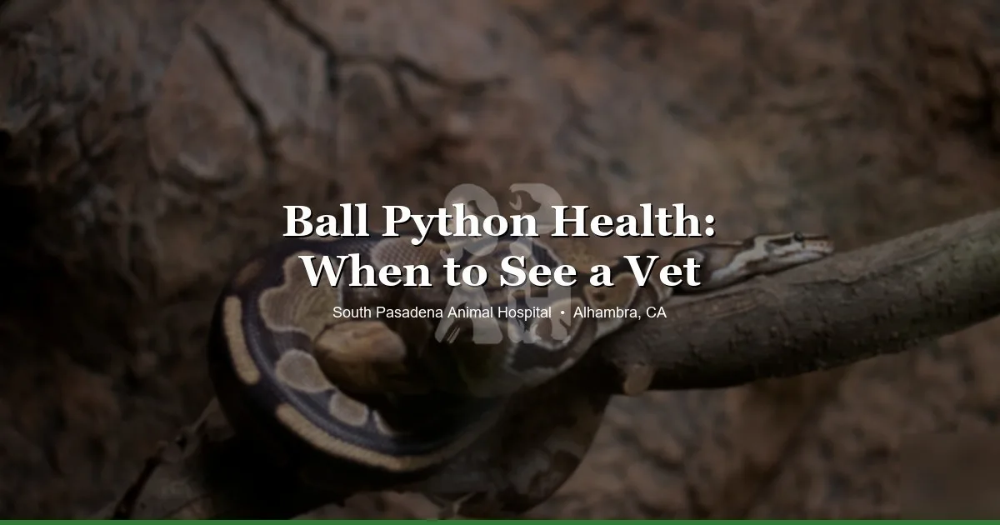
Reptile CareBall Python Health Issues: Signs Your Snake Needs a Vet
Not eating? Wheezing? Stuck shed? Common ball python health problems and when to see a vet.
Read more →
Exotic AnimalsExotic Pet Vet Care in the San Gabriel Valley
Looking for an exotic vet in the SGV? We see reptiles, birds, rabbits, and more — serving Monterey Park, San Gabriel, Rosemead, Arcadia, and beyond.
Read more →
We Moved — Here’s Why, Where, and What’s Different
Same doctors, same team, way better parking. Our new home at 3116 W Main St in Alhambra with drive times from every SGV city.
Read more →
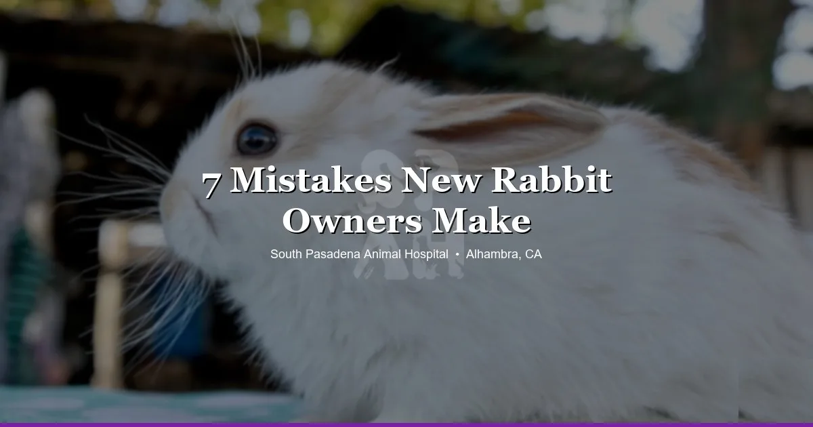
Rabbit Care7 Mistakes New Rabbit Owners Make (And We See Every Single One)
From pellet overfeeding to skipping the spay — the most common rabbit mistakes we see at our Alhambra clinic every week.
Read more →
 Wellness
WellnessSpring Pet Wellness Checklist — What Your Alhambra Vet Actually Wants You to Do
Dogs, cats, rabbits, birds, reptiles — everything you should actually focus on this spring. From a real SGV vet.
Read more →
 Dog Care
Dog CareDog Dental Disease: Why Your Dog’s Bad Breath Is a Bigger Deal Than You Think
Most dogs over 3 have some form of dental disease. Here's what we actually see at our Alhambra clinic and when to act.
Read more →
 Cat Care
Cat CareYour Indoor Cat Still Needs a Vet — Here’s Why
Indoor-only doesn't mean risk-free. The health problems we catch in cats whose owners thought they were fine.
Read more →
 City Guide
City GuideWhat to Look for in a Vet Clinic — A Guide for SGV Pet Owners
From continuity of care to transparent pricing — the things that actually matter when choosing an animal hospital in the San Gabriel Valley.
Read more →
 Small Animal
Small AnimalChinchilla Health Problems: What Every Owner Should Watch For
Chinchillas hide illness well and most LA vets don't see them. The health issues we catch most at our Alhambra clinic.
Read more →
11 Signs Your Dog Needs to See a Vet
Not every limp is an emergency, but some are. The signs we see most often that actually warrant a vet visit — and which ones can't wait.
Read more →
New Puppy in Alhambra? Your Complete First-Year Vet Guide
Vaccines, dewormers, spay/neuter timing, socialization — exactly what your puppy needs in year one and when.
Read more →
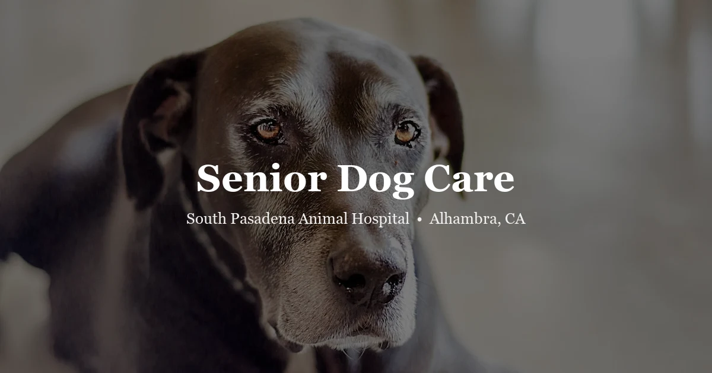
Dog CareSenior Dogs in Alhambra: When to Visit the Vet More Often
Dogs over 7 need more than a once-a-year checkup. What changes with age, what bloodwork reveals, and when to stop waiting.
Read more →
When to Spay or Neuter Your Dog — An Alhambra Vet’s Honest Guide
The "6 months" rule isn't the full story anymore. How breed, size, and sex affect the ideal timing for spay and neuter.
Read more →
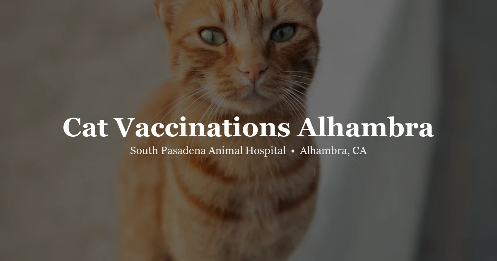
Cat CareCat Vaccines Explained: What Your Alhambra Vet Actually Recommends
FVRCP, rabies, FeLV — which vaccines your cat truly needs, how often, and what indoor vs. outdoor cats actually require.
Read more →
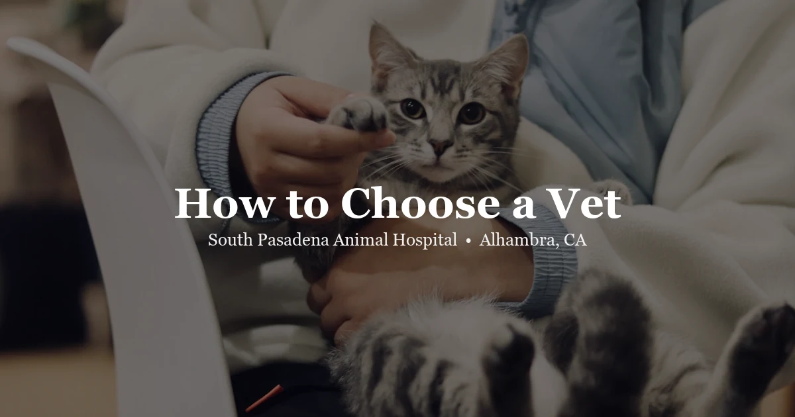
City GuideHow to Choose a Vet in Alhambra for Your Dog or Cat
Seven things to look for when choosing the right veterinarian in Alhambra — from in-house diagnostics to transparent pricing.
Read more →
 Bird Care
Bird CareCockatiel & Parakeet Care: What Most Owners Get Wrong
Seed diets, Teflon fumes, night frights — the common cockatiel and budgie problems we see every week at our SGV clinic.
Read more →
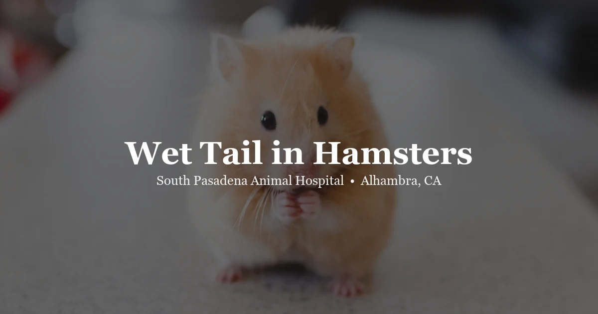
Small AnimalWet Tail in Hamsters: Symptoms, Treatment & When It’s an Emergency
Wet tail is fatal within 24–72 hours without treatment. Know the signs and why same-day vet care is critical.
Read more →
 Cat Care
Cat CareYour Kitten’s First Vet Visit in Alhambra: What to Expect & What to Bring
Vaccines, FIV/FeLV testing, deworming, microchipping — exactly what happens at a kitten's first vet visit and when to schedule it.
Read more →
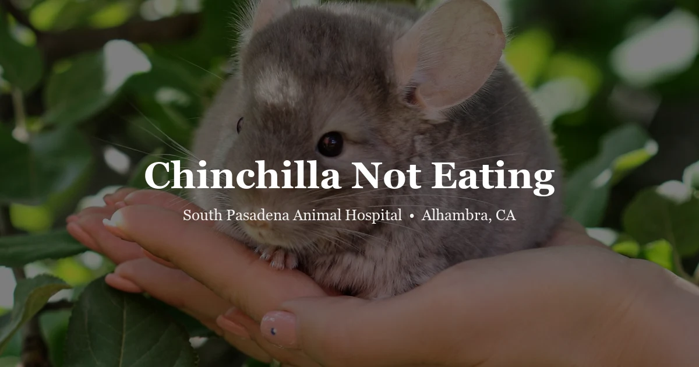
Small AnimalChinchilla Not Eating? Here’s What It Means and What to Do
Dental disease, GI stasis, respiratory infection — the most common reasons a chinchilla stops eating and why 12–24 hours is urgent.
Read more →
 Vet Services
Vet ServicesWhat Is Laser Therapy for Pets — and Does It Really Work?
Photobiomodulation therapy explained: how it works, what conditions it treats, and what to realistically expect for your pet.
Read more →
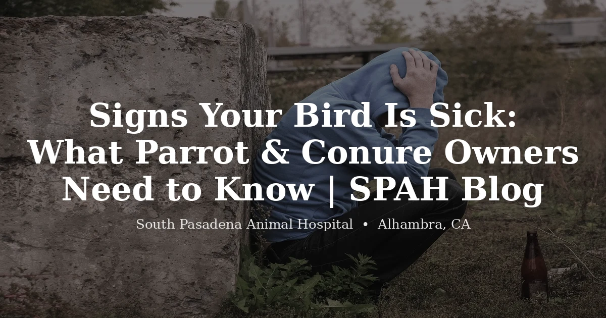
Bird CareSigns Your Bird Is Sick: What Parrot & Conure Owners Need to Know
Birds hide illness until they can't. The subtle early signs most owners miss — and the emergency signs that need same-day attention.
Read more →
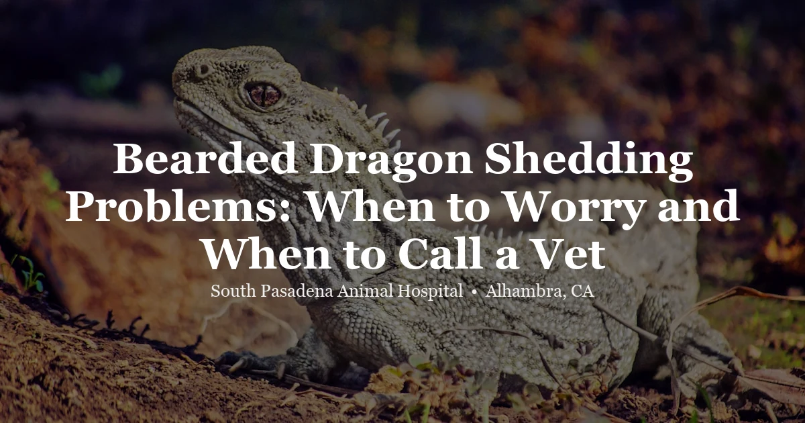
Reptile CareBearded Dragon Shedding Problems: When to Worry
Stuck shed on toes and tail tips can cut off circulation within days. What dysecdysis is, how to help at home, and when to call a vet.
Read more →
 Preventive Care
Preventive CareMicrochipping Your Pet in Alhambra: What to Expect
A microchip takes seconds and can reunite you with a lost pet years later. The procedure, registration, and why indoor pets need one too.
Read more →
 Rabbit Care
Rabbit CareWhy Is My Rabbit Grinding Its Teeth? A Guide to Rabbit Dental Disease
Rabbit dental disease is common and commonly missed. The subtle signs, why cheek teeth are the real danger, and what treatment looks like.
Read more →
 Cat Care
Cat CareCat Hyperthyroidism: Signs, Diagnosis & Treatment
The most common hormonal disorder in older cats — and one of the most frequently missed. Weight loss with a good appetite is the classic red flag.
Read more →
 Dog Care
Dog CareDog Anxiety in LA: Signs, Causes & What Your Vet Can Do
Anxiety is one of the most undertreated conditions in dogs. Signs, common triggers, and the evidence-based treatment options that actually work.
Read more →
 Small Animal
Small AnimalGuinea Pig Teeth & Diet: Why Food Affects Their Whole Body
Dental disease in guinea pigs is almost always a diet problem. What they actually need to eat, the signs of trouble, and why hay is non-negotiable.
Read more →
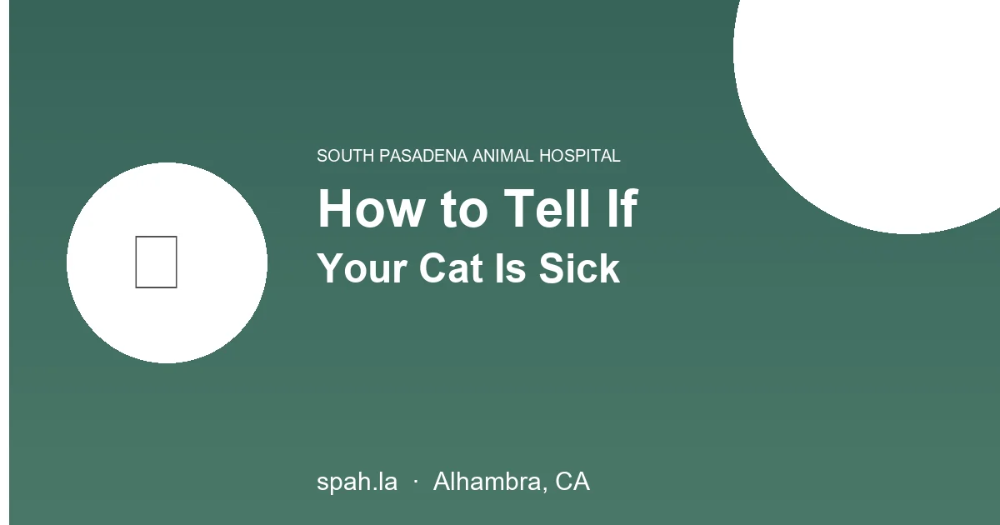
Cat CareHow to Tell If Your Cat Is Sick: 10 Signs Owners Miss
Cats hide illness brilliantly. The 10 subtle signs — from hiding to a visible third eyelid — and why "wait and see" is often the wrong call.
Read more →
 Rabbit Care
Rabbit CareRabbit Bonding 101: How to Safely Introduce a Second Rabbit
Bonding two rabbits takes patience, a neutral space, and usually a spay/neuter first. A step-by-step guide from an Alhambra exotic vet.
Read more →
 Dog Health
Dog HealthDog Ear Cytology: What It Is, When It’s Done & What It Costs
Ear cytology reveals exactly what's causing your dog's ear infection — yeast, bacteria, or mites — so treatment targets the right organism the first time.
Read more →
 Preventive Care
Preventive CareDog Fecal Test: What It Checks For, How It Works & What It Costs
A fecal test screens for roundworms, hookworms, giardia, coccidia, and more — parasites you can't see any other way.
Read more →